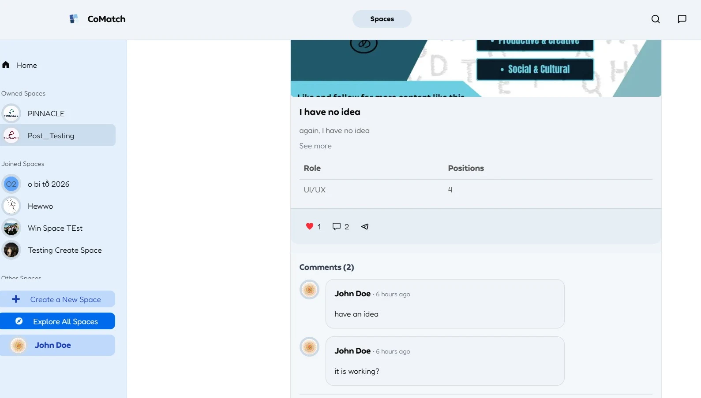
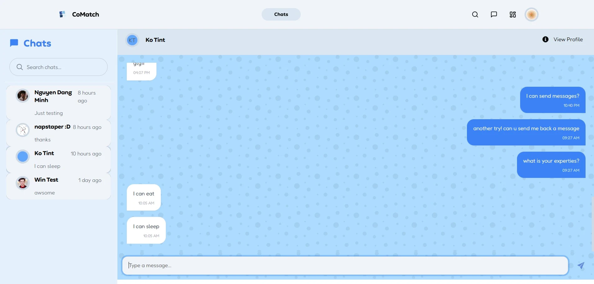

NUS Orbital 2026 / Team project
CoMatch.
Helping students find the right people to build with.
- Timeline
- May — August 2026
- Team
- Nay Min Thar
Win Htut Khaung Soe - My focus
- Feature development
Real-time chat & testing - Stack
- Next.js · React · TypeScript
Supabase · Vercel

The problem
Finding a team shouldn’t
stand in the way of an idea.
Students looking for teammates often rely on busy group chats or shared spreadsheets. Opportunities get buried, availability becomes unclear, and it can be difficult to find people interested in the same project.
My teammate and I built CoMatch as a central place to discover project communities, post open roles, and talk to potential teammates. We developed it through NUS Orbital, completing the project in August 2026.
My contribution
From discovery to conversation.
I contributed across the application, with most of my feature work focused on Spaces, recruitment posts, and real-time messaging.
Spaces & membership
Implemented the Space directory, creation and detail flows, creator membership, and join/leave behaviour. Connected joined Spaces to home-page filtering while supporting broader exploration.
Recruitment & interaction
Built teammate-call flows with role selection and Supabase insertion, then added likes, comments, and applications. Connected comment authors to public profiles and fixed the ability for owners to apply to their own posts.
Real-time messaging
Implemented one-to-one chat, profile-to-chat routing, read-state updates, and unread notifications. Integrated notification behaviour across the navigation and dashboard, and debugged chat routing after UI updates.
Testing & delivery
Wrote Vitest and React Testing Library suites for shared components, Supabase integration tests, and Playwright checks for protected routes, login rendering, and search interaction. Deployed the application to Vercel and helped resolve deployment issues.
Inside the product
A connected team-finding flow.
Spaces organise opportunities around modules, hackathons, or project categories. Recruitment posts describe the idea and open roles. Profiles and direct messaging help people decide whether they want to work together.


Engineering decisions
Making the pieces work together.
Keeping conversations connected
Chat links carry a target user ID to a shared workspace. The app looks for an existing conversation between the pair and opens it, creating a conversation when needed. Supabase Realtime delivers message updates, while read flags support unread indicators beyond the chat page.
Giving membership its own data model
A dedicated space_members table separates membership from recruitment applications. This supports join/leave behaviour, membership lookups, and filtering the home page by joined Spaces.
Keeping recruitment interactions in context
Comments expand inside a post instead of moving the user into a separate overlay. Recruitment forms use a constrained, scrollable body so adding more roles does not push the submission controls beyond the viewport.
Testing at different levels
Component tests exercise rendering and interactions. Database integration checks inspect queries and schema expectations. Browser tests check login rendering, route protection, and search behaviour. Each layer covers a different kind of failure; route checks alone do not prove the complete authenticated application flow.
Reflection
Learning across the whole application.
This project gave me practical experience connecting UI interactions, relational data, and real-time events in a shared codebase. Later UI changes also required debugging behaviour across pages, including search, applications, notifications, and chat navigation.
My next step is to deepen that foundation: write more comprehensive workflow tests, make interactions easier to use, and continue building software with clear responsibilities between components.